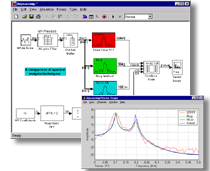

|
The Signal Processing Blockset provides the algorithmic foundation for many applications
in the areas of speech and
audio processing,
telephony,
wireless,
digital communications and
control,
radar/sonar,
and medical electronics.
|
The Signal Processing Blockset brings the full power of Simulink to DSP system design and prototyping by providing advanced algorithms and enabling technologies within the adaptable block diagram environment of Simulink. Rate conversion, transforms, wavelets, adaptive filtering, and many other component blocks enable you to assemble complex digital systems rapidly and efficiently. |
|
The
Signal Processing Blockset is an | |